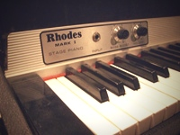
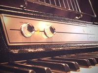
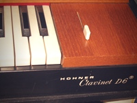

| Φωτογραφία | Περιγραφή | Τιμή |
|---|---|---|
 |
Το πιάνο Rhodes είναι ένα ηλεκτρομηχανικό πιάνο, που εφευρέθηκε από τον Harold Rhodes κατά τη δεκαετία του 1950. Χρησιμοποιεί πληκτρολόγιο τύπου πιάνου με σφυράκια που χτυπούν μικρές μεταλλικές ράβδους, με τον ήχο να ενισχύεται από ηλεκτρομαγνητικούς μαγνήτες. | $1400 |
 |
Το ηλεκτρικό πιάνο Wurlitzer είναι ένα ηλεκτρομηχανικό πιάνο που δημιουργήθηκε από την εταιρεία Rudolph Wurlitzer Company. Χρησιμοποιεί πληκτρολόγιο τύπου πιάνου με σφυράκια που χτυπούν μικρές μεταλλικές ράβδους, ενισχυόμενο από ηλεκτρομαγνητικούς μαγνήτες. | $1600 |
 |
Το Clavinet είναι ένα ηλεκτρονικά ενισχυμένο κλαβίχορδο που κατασκευάστηκε από την εταιρεία Hohner. Κάθε πλήκτρο χρησιμοποιεί ένα ελαστικό άκρο για να χτυπήσει μια χορδή. Ο χαρακτηριστικός λαμπερός staccato ήχος του συχνά συγκρίνεται με αυτόν μιας ηλεκτρικής κιθάρας. Διάφορα μοντέλα παρήχθησαν με τα χρόνια, συμπεριλαμβανομένων των I, II, L, C, D6 και E7. | $1200 |
Περιορίστε πόσο μπορεί να συρρικνωθεί ή να απλωθεί ένα στοιχείο χρησιμοποιώντας min-width και max-width για απόκριση σε διαφορετικές οθόνες.
<!DOCTYPE html>
<html>
<head>
<meta charset="utf-8">
<title>Ελάχιστο & Μέγιστο Πλάτος (min/max-width)</title>
<style type="text/css">
body {
font-family: Arial, Verdana, sans-serif;
color: #111111;}
th {
border-bottom: 1px solid #0088dd;
text-align: left;
color: #0088dd;
font-weight: normal;}
td {
min-width: 150px;
min-height: 200px;
vertical-align: top;
line-height: 1.4em;}
td.description {
min-width: 450px;
max-width: 650px;
text-align: left;
padding: 5px;
margin: 0px;}
</style>
</head>
<body>
<table>
<tr>
<th>Φωτογραφία</th>
<th>Περιγραφή</th>
<th>Τιμή</th>
</tr>
<tr>
<td><img src="images/rhodes.jpg" width="200" height="150" alt="Fender Rhodes" /></td>
<td class="description">Το πιάνο Rhodes είναι ένα ηλεκτρομηχανικό πιάνο, που εφευρέθηκε από τον Harold Rhodes κατά τη δεκαετία του 1950. Χρησιμοποιεί πληκτρολόγιο τύπου πιάνου με σφυράκια που χτυπούν μικρές μεταλλικές ράβδους, με τον ήχο να ενισχύεται από ηλεκτρομαγνητικούς μαγνήτες.</td>
<td>$1400</td>
</tr>
<tr>
<td><img src="images/wurlitzer.jpg" width="200" height="150" alt="Wurlitzer EP200" /></td>
<td class="description">Το ηλεκτρικό πιάνο Wurlitzer είναι ένα ηλεκτρομηχανικό πιάνο που δημιουργήθηκε από την εταιρεία Rudolph Wurlitzer Company. Χρησιμοποιεί πληκτρολόγιο τύπου πιάνου με σφυράκια που χτυπούν μικρές μεταλλικές ράβδους, ενισχυόμενο από ηλεκτρομαγνητικούς μαγνήτες.</td>
<td>$1600</td>
</tr>
<tr>
<td><img src="images/clavinet.jpg" width="200" height="150" alt="Hohner Clavinet D6" /></td>
<td class="description">Το Clavinet είναι ένα ηλεκτρονικά ενισχυμένο κλαβίχορδο που κατασκευάστηκε από την εταιρεία Hohner. Κάθε πλήκτρο χρησιμοποιεί ένα ελαστικό άκρο για να χτυπήσει μια χορδή. Ο χαρακτηριστικός λαμπερός staccato ήχος του συχνά συγκρίνεται με αυτόν μιας ηλεκτρικής κιθάρας. Διάφορα μοντέλα παρήχθησαν με τα χρόνια, συμπεριλαμβανομένων των I, II, L, C, D6 και E7.</td>
<td>$1200</td>
</tr>
</table>
</body>
</html>